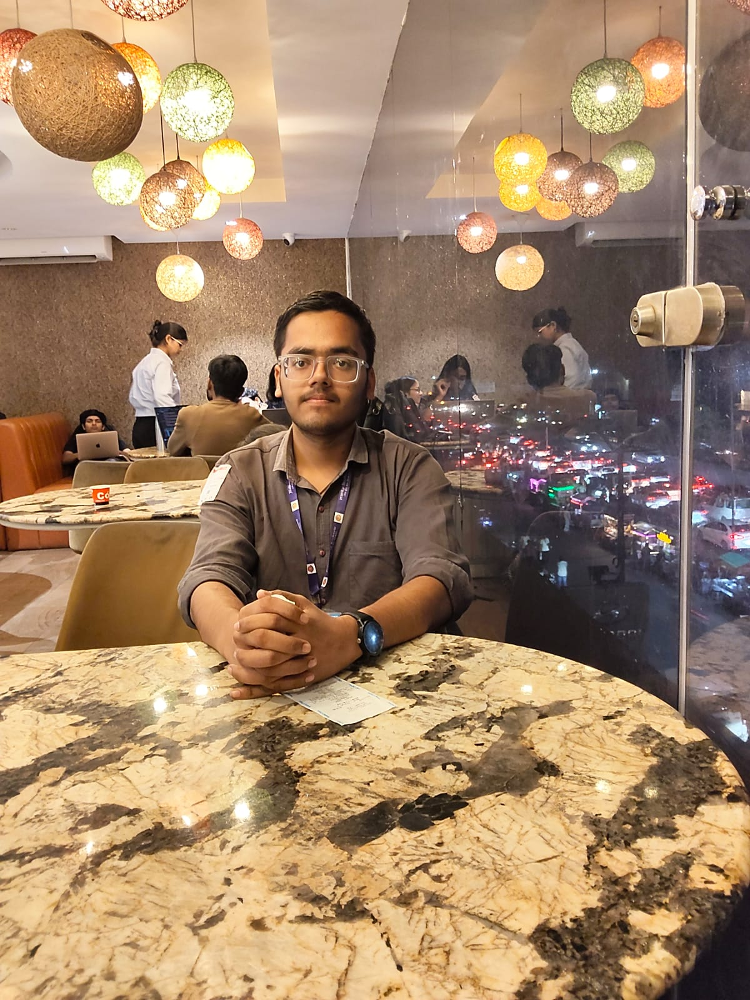

Meet the Photographer
Somewhere between capturing moments, I started finding myself.
My Story
Hii, I am Ayush behind this frame😊 , i am a B.Tech student at the university of Lucknow.
As they say, engineers can do anything except engineering 😁. Jokes apart, I think a
career and a hobby are two different things. We explore so many things around us that
shape our ideas, our thoughts, and even our interests and hobbies.
By the way, I never really planned to become a photographer. Although, I think
"photographer" is such a big word 😅. I simply love capturing moments on my phone
and looking at the world through my frames. Whether it is a random empty road, a leaf,
a clear sky, or something else—I simply started noticing little things: a quiet moment,
a familiar face, or a sky that looked different for a few seconds.
Personal Reflection
I love nature, exploring new things, and just being random 😉.
My habit of photography has taught me to notice the small things around me.
Maybe photography is not always about seeing the world differently.
Sometimes, it is about finally noticing what was already in front of you
I simply love enjoying my own company rather than always being around others,
so I love capturing random moments on my phone. So basically, I created an
online photo gallery.
I am an engineer who writes code and also captures moments—someone
who loves to see the world through his frames 😊.